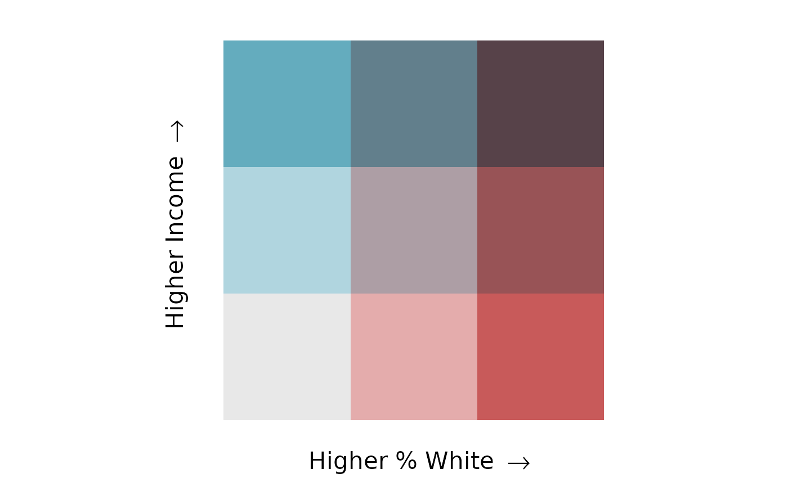
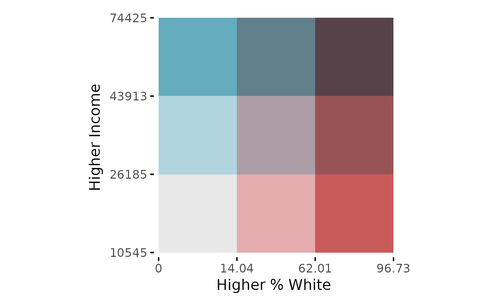

Creates a ggplot object containing a legend that is
specific to bivariate mapping.
bi_legend(pal, dim = 3, xlab, ylab, size = 10, flip_axes = FALSE,
rotate_pal = FALSE, pad_width = NA, pad_color = "#ffffff",
breaks = NULL, arrows = TRUE, base_family = "sans")A palette name or a vector containing a custom palette. See
the help file for bi_pal for complete list of built-in palette
names. If you are providing a custom palette, it must follow the formatting
described in the 'Advanced Options' vignette.
The dimensions of the palette. To use the built-in palettes,
this value must be either 2, 3, or 4. A value of
3, for example, would be used to create a three-by-three bivariate
map with a total of 9 classes.
If you are using a custom palette, this value may be larger (though these
maps can be very hard to interpret). See the 'Advanced Options' vignette
for details on the relationship between dim values and palette size.
Text for desired x axis label on legend
Text for desired y axis label on legend
A numeric scalar; size of axis labels
A logical scalar; if TRUE, the axes of the palette
will be flipped. If FALSE (default), the palette will be displayed
on its original axes. Custom palettes with 'dim' greater
than 4 cannot take advantage of flipping axes.
A logical scalar; if TRUE, the palette will be
rotated 180 degrees. If FALSE (default), the palette will be
displayed in its original orientation. Custom palettes with 'dim' greater
than 4 cannot take advantage of palette rotation.
An optional numeric scalar; controls the width of padding between tiles in the legend
An optional character scalar; controls the color of padding between tiles in the legend
An optional list created by bi_class_breaks. Depending
on the options selected when making the list, labels will placed
showing the corresponding range of values for each axis or, if
split = TRUE, showing the individual breaks.
A logical scalar; if TRUE (default), directional arrows
will be added to both the x and y axes of the legend. If you want to
suppress these arrows, especially if you are supplying breaks to create
a more detailed legend, this parameter can be set of FALSE.
A character string; by default, it is set to "sans",
which has been the font used in biscale since its initial release.
If you are using non-Latin characters, you may need to set
base_family = "" to get your characters to display. Other options
include "mono" and "serif". See the Breaks and Legends
vignette for details.
A ggplot object with a bivariate legend.
# sample 3x3 legend
legend <- bi_legend(pal = "GrPink",
dim = 3,
xlab = "Higher % White ",
ylab = "Higher Income ",
size = 16)
## print legend
legend

# sample 3x3 legend with breaks
## create vector of breaks
break_vals <- bi_class_breaks(stl_race_income, style = "quantile",
x = pctWhite, y = medInc, dim = 3, dig_lab = c(x = 4, y = 5),
split = TRUE)
## create legend
legend <- bi_legend(pal = "GrPink",
dim = 3,
xlab = "Higher % White ",
ylab = "Higher Income ",
size = 16,
breaks = break_vals,
arrows = FALSE)
## print legend
legend

# sample 3x3 legend with Chinese characters
## set language preference
showtext::showtext_auto()
## create legend
legend <- bi_legend(pal = "GrPink",
dim = 3,
xlab = "白人 ",
ylab = "收入 ",
size = 16,
base_family = "")
## print legend
legend